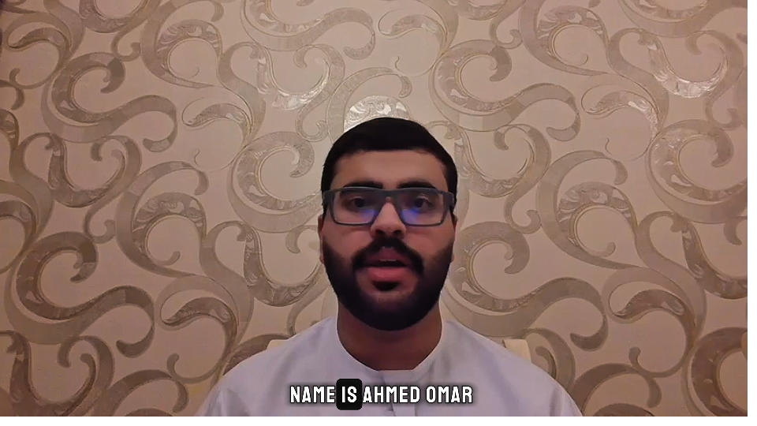
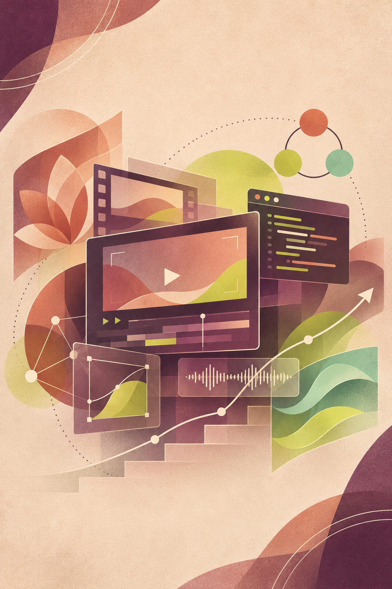

Self-introduction
My Introduction Video
A short introduction to me, my studies, and my interests.
20 years old · University of Sharjah · IT Multimedia
I enjoy computers, learning how applications are developed, video games, and car racing. Explore my introduction and my favorite graphic design project.
View my projects Back to teamHi everyone! My name is Ahmed Omar Al Ali, and I am 20 years old. I study IT Multimedia at the University of Sharjah. I chose this field because I am interested in computers and enjoy learning how applications are developed.
In my free time, I enjoy playing video games and racing, especially cars. I also value teamwork, friendly competition, and continuous learning. Thank you for listening!
Individual portfolio connected to the group website.

A short introduction to me, my studies, and my interests.
Digital Workspace

This is my favorite design, and I created it in my Graphic Design class at the University of Sharjah. It is about a digital workspace and the connection between computers, multimedia, and creativity. I chose this idea because I study IT Multimedia and enjoy working with computers and digital tools.
In this design, I used warm shades of cream, plum, orange, and green to create a modern and creative look. I included computer screens showing video editing and code, along with audio and graphic elements, to show different parts of digital work. I arranged the elements in layers so the design feels connected and balanced.
While making this project, I learned more about choosing colors, arranging images, and keeping a layout neat. I also learned how small details can help the final design look more complete.
This is my favorite project because I could combine my interest in computers with my creativity. I am happy with the result, and I hope to create more graphic design projects in the future.